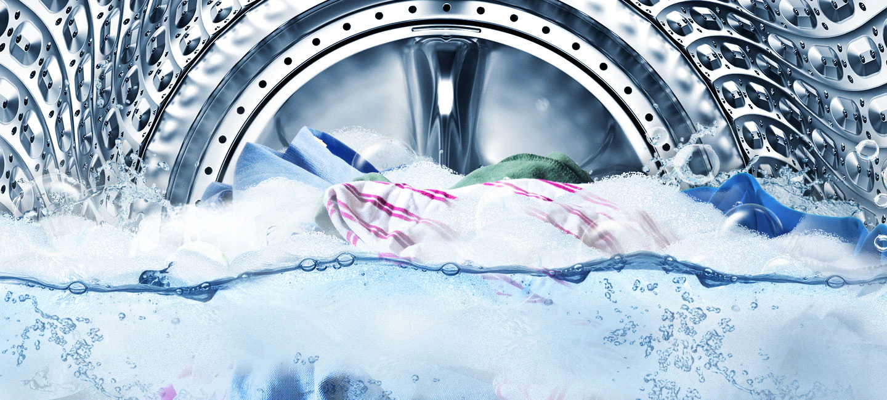
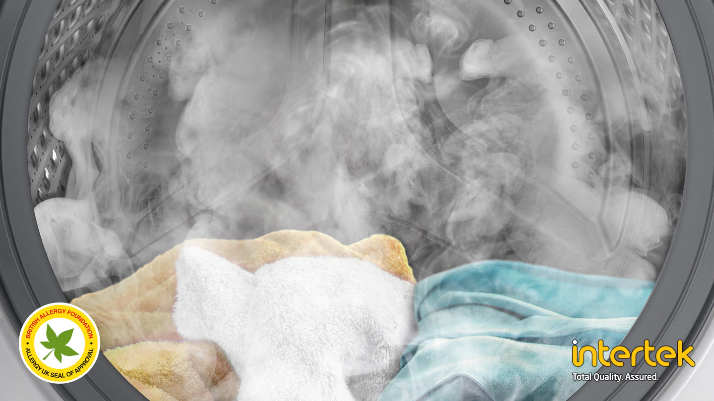
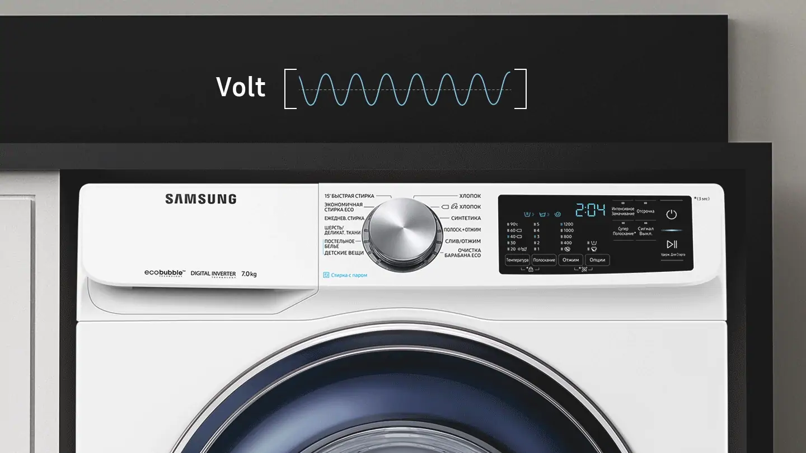

Мощные пузырьки
Технология Eco Bubble™ гарантирует тщательное отстирывание даже при низких температурах*. Стиральный порошок превращается в пузырьки, что позволяет ему быстро проникать в ткань и легко удалять загрязнения, при этом защищая ткань и экономя энергию.**

* Тестирование проведено по нормативу IEC 60456-2010 при 4 кг загрузки, результаты сверхэкологичной стирки в холодной воде (WF80F5E5U4W) сравнивались с результатами стирки хлопчатобумажной ткани при 40°C без использования технологии Eco Bubble (WF0702WKU). Отдельные результаты могут отличаться.** На основании отчета о лабораторном тестировании эффективности, проведенном компанией Springboard Engineering, которое исследовало действие обычного моющего раствора и «пузырьковой» технологии без механического воздействия на полосках EMPA.
Стирка за 39 минут
Программа Super Speed позволяет выполнять ежедневную стирку вещей всего за 39 минут. Технология QuickDrive™ сокращает время стирки за счет динамичного движения одежды, а функция Eco Bubble™ обеспечивает ее мощную очистку. Время полоскания также сокращается благодаря использованию функции Speed Spray и схемы барабана Swirl+ Pattern*, а также увеличению скорости вращения.

* Протестировано на стиральной машине с барабаном †Swirl+ Pattern†, сравнение проводилось с барабаном Samsung Swirl с использованием внутренних данных тестирования
Интенсивное удаление пятен
Технология «пузырькового» замачивания позволяет отстирать различные виды трудновыводимых пятен нажатием одной кнопки. Одежда тщательно замачивается в активных пузырьках, поэтому любые загрязнения и пятна разрушаются и удаляются гораздо более эффективно*.

* Тестирование проведено по нормативу IEC 60456 в 5-й редакции при 8 кг загрузки и с использованием технологии стирки Bubble Soak (WF80F5E5U4), результаты которого сравнивались с результатами стирки хлопчатобумажной ткани при 40/60°, синтетической ткани при 60° и джинсовой ткани при 40° без использования технологии Bubble Soak (WF0702WKU).
Надежность и производительность
Технология Digital Inverter использует сильнодействующие магниты в двигателе для обеспечения более бесшумной и эффективной работы, при этом потребляется меньше энергии по сравнению с универсальными двигателями. За счет устранения подвижных щеток обеспечивается исключительная долговечность работы*, подкрепленная 10-летней гарантией**.

* Изделию был присужден сертификат Ассоциации электрических, электронных и информационных технологий в Германии (Verband Deutscher Elektrotechniker – VDE) на 23-летний срок службы.
Нагревательный элемент Ceramic Heater+ имеет новый тип антиадгезионного покрытия, которое сокращает образование накипи по сравнению с обычными керамическими нагревателями*. Его патентованная конструкция** обеспечивает сокращение образования накипи, что препятствует возникновению теплопроводности. Благодаря этому нагревательный элемент сохраняет свою эффективность в течении более длительного периода времени и обладает повышенной прочностью.

* Тестирование проведено на нагревательном элементе Ceramic Heater + по сравнению с обычным нагревательным элементом в составе стиральной машины Samsung WF60F4E0N0W/ET. Результаты тестирования основаны на независимой проверке изменения веса нагревателя в жесткой воде.* Номер заявки на патент: 10-2012-0029920 в Корее, Китае, Европе и США.
Гигиеническая чистота
Стирка паром
По-настоящему глубокая очистка с помощью пара.
Стирка паром улучшает качество чистки одежды без предварительной обработки.
Пар подается снизу в барабан благодаря чему одежда полностью пропитывается.
Пар удаляет частицы загрязнений и 99.9% бактерий и деактивирует аллергены*.

Умная диагностика
Функция Smart Check
Забудьте о дополнительных расходах и неудобствах, связанных с поломкой машины. Функция умной диагностики Smart Check - это автоматическая система контроля состояния машины, которой можно пользоваться на смартфоне с помощью специального приложения*. Функция фиксирует неисправности на ранней стадии и обеспечивает быструю диагностику, предлагая решение для ее устранения. Это экономит время и затраты на ремонт**.

Защита от перепадов напряжения
Функция Volt Control
Функция Volt Control защищает машину от скачков напряжения питания. Она фиксирует значительное повышение напряжения питания и автоматически выключает машину. Это предотвращает повреждение стиральной машины.
